|
|
| sea cucumbers text index | photo index |
| Phylum Echinodermata > Class Holothuroidea |
| Ashy
pink sea cucumber Holothuria fuscocinerea Family Holothuriidae updated Apr 2020 Where seen? This long pinkish sea cucumber is sometimes seen on our Southern shores. Usually well wedged among living corals and coral rubble, usually alone. Seen mostly at night, only a short part of the front end cautiously sticking out. It is very sensitive and will retract into its hiding place at the slightest disturbance. The front end usually facing downwards against the ground, suggesting that it browses on edible bits that settle on the ground. Holothuria pervicax looks very similar. Teo Siyang, Lionel Ng and Loh Kok Sheng have identified it and it is a new record for Singapore! Elsewhere, it is found in lagoons, reef flats and on outer reef slopes of barrier reefs. Features: 15-20cm long. Body soft long cylindrical with a distinct upper and underside. Underside flat pale with many short tube feet. 'Fuscocinerea' suggests 'dark' and 'ashy' and indeed, the sea cucumber does look like it has been rolled in ash. Upperside generally pale pink or beige with irregular dark blotchy bars or blobs along the length. Small dark-circled white spots all over the upperside, with tiny spiky protrusions in the centre of the white spots. Anus is distinctly ringed with dark brown or dark purple. Mouth facing down with 20 large feeding tentacles short white with bushy tips. When disturbed, it readily releases from its backside, many very thick sticky white cylindrical tubes called Cuvierian tubules. Human uses: It is listed among the commercially important sea cucumbers of the world. This species does not have a commercial value in the western central Pacific; however, it is of commercial importance in China, Malaysia and the Philippines. In China, it is of low commercial importance. It is exploited in a multispecies fishery in Sri Lanka. |
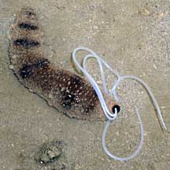 When disturbed, releases Cuvierian tubules. Beting Bemban Besar, Jun 09 |
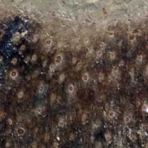 Tiny spikes on white circles. |
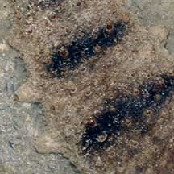 Dark blotchy bars on upperside. |
|
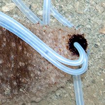 Anus ringed with dark brown. |
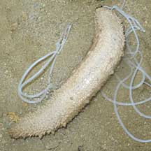 Underside flat and pale. |
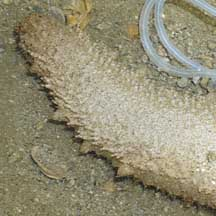 |
| Ashy pink sea cucumbers on Singapore shores |
On wildsingapore
flickr
|
| Other sightings on Singapore shores |
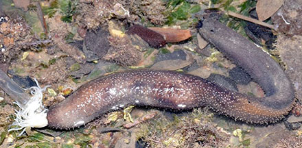 Berlayar Creek, Mar 20 Photo shared by Loh Kok Sheng on facebook. |
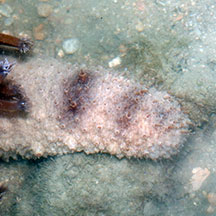 Small Sisters Island, Sep 10 Photo shared by Marcus Ng on flickr. |
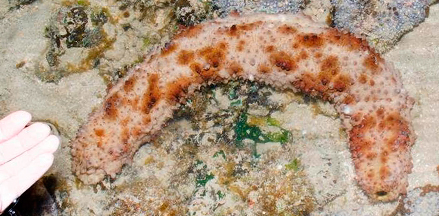 Pulau Hantu, Aug 14 |
||
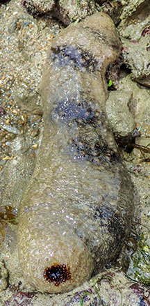 Terumbu Pempang Laut, Mar 24 Photo shared by Vincent Choo on facebook. |
||
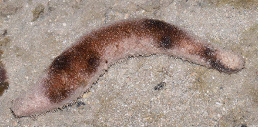 Pulau Semakau East, Jul 15 Photo shared by James Koh on facebook. |
||
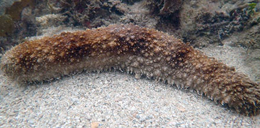 Terumbu Bemban, Jun 20 Photo shared by Dayna Cheah on facebook. |
|
Links
References
|